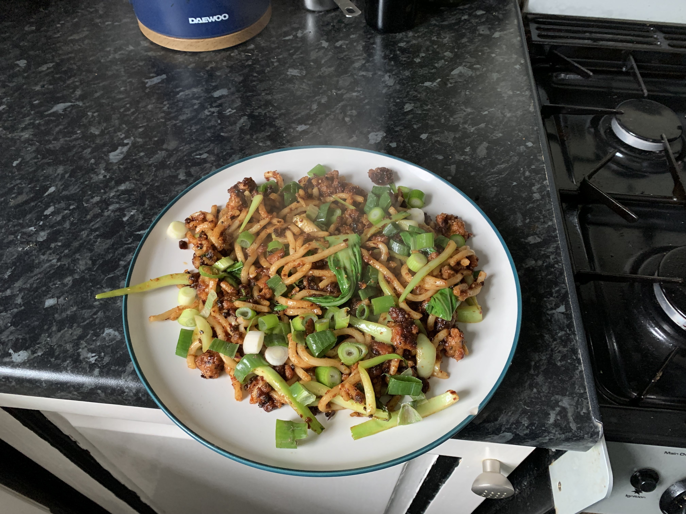

DanDan Noodles

DanDan Noodles
No need for a takeaway, this is much better!
Ingredients for 1
- 3 Good Quality Sausages
- Packet of straight to wok udon noodles
- 1 Teaspoon of Chinese 5 spice
- 1 Tablespoon of dark soy sauce
- 1 Tablespoon of hot water
- 1 heaped tablespoon of tahini paste
- 1 or 2 tablespoons of chilli oil
- One pak choi separated into leaves and stalks
- Spring onions for garnish
Method
- Peel the skin from the sausages then fry them in olive oil a pan on medium heat with the Chinese 5 spice and some salt and black pepper.
- When the sausage bits are crisp add the pak choi stalks and udon noodles and mix together.
- Make up the dandan sauce:
- Mix the soy sauce, hot water, tahini paste and chilli oil in a small bowl.
- Add the sauce and the pak choi leaves to the pan and mix together for another minute.
- Serve up and add chopped spring onnions to garnish.
Home